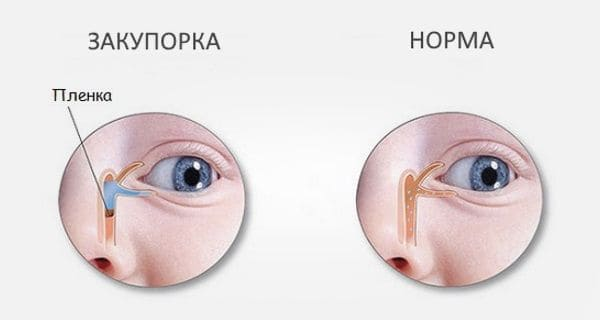
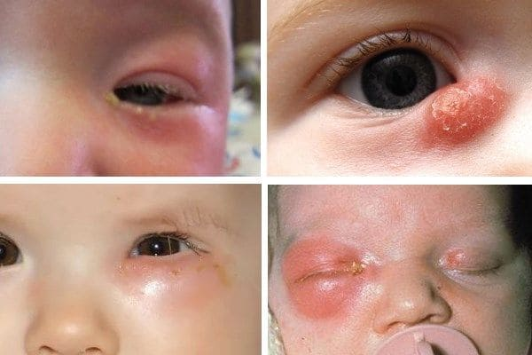
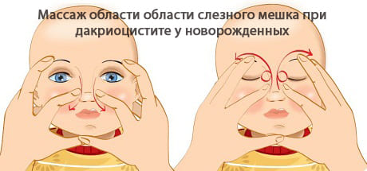

Чем меньше ребенок, тем больше беспокоятся его родители при появлении любых симптомов болезни. Врожденная непроходимость носослезного канала – это болезнь, которая может беспокоить с самого рождения. Это распространенная проблема у новорожденных и младенцев первых месяцев жизни. У нас с вами есть канал, который открывается двумя входами на нижнем и верхнем веке, у внутреннего угла глаза, и отводит слезу в нос. Поэтому, когда мы плачем, мы шмыгаем носом.
У здоровых людей слеза течет на кожу только при плаче, в остальное время она омывает глаз и спокойно оттекает в нос, для его дополнительного увлажнения. Но иногда этот канал не открывается при рождении, это называется непроходимостью.
Непроходимость носослезного канала может приводить к дакриоциститу – воспалению слезного мешочка, расположенного между носом и глазом.

Два показания к зондированию
1) упорные конъюнктивиты/дакриоциститы: педиатр или окулист назначает то один местный антибиотик, то второй, то третий; пока родители капают, глаз очищается, но вскоре после отмены инфекции упорно возвращаются;
2) если проток не открывается сам к 6–12 месяцам.
У детей с непроходимостью носослезного канала слеза «стоит» в глазу и/или часто течет на кожу щеки, что создает условия для глазных инфекций: конъюнктивита и дакриоцистита. Почти все дети, имеющие в первые месяцы жизни непроходимость носослезного канала, самостоятельно от нее вылечиваются, канал открывается сам на первом году жизни и проблемы уходят.
Однако:
1) у некоторых детей ждать до года не получается, потому что один за одним беспокоят конъюнктивиты;
2) у некоторых детей канал не открывается даже в год.
Вот тогда и применяют зондирование носослезного канала, то есть его «протыкание» и «промывание».
При этом не нужно путать просто регулярное скопление экссудата у внутреннего угла глаза (ребенка не беспокоит)
с настоящим конъюнктивитом (зуд, боль, беспокойство, отек, обильный гной в глазу, слипание ресниц) или дакриоциститом (боль, покраснение, инфильтрат у внутреннего угла глаза).

При простом избыточном скоплении экссудата достаточно промывать глаза кипяченой водой каждый раз после пробуждения ребенка. При инфекциях нужны местные антибиотики/антисептики (разрешенные с рождения: глазные капли с левомицетином, Тобрекс, Витабакт и др.). Желательно, чтобы они были назначены врачом.
Также при непроходимости может помогать массаж носослезного канала – попросите доктора показать, как его делать.

(Сергей Бутрий "Здоровье ребенка: современный подход")